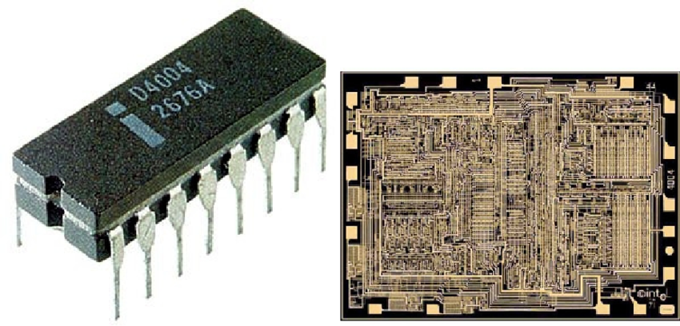
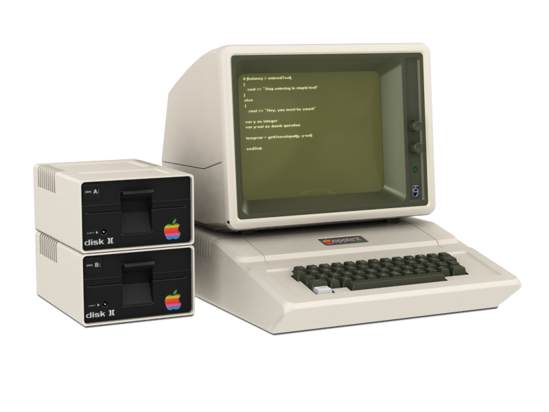

Calculatoarele din a patra generatie
1971-1980
In 1971 a fost realizat primul microprocesor (Intel 4004) de frima Intel. Un microprocesor este un procesor al carui componente sunt grupate intr-un singur circuit integrat.
Calculatoarele care utilizau aceste microprocesoare se numeau microcalculatoare.
De-a lungul acestei generatii marimea calculatoarelor a scazut si puterea lor de procesare a crescut.
In aceasta generatie s-au dezvoltat tehnologii precum: multi-procesarea, multi-programarea, time-sharing, viteza de operare si memoria virtuala.
Aceste avansuri tehnologice au facut calculatoarele mult mai usor de utilizat. In aceasta perioada a aparut si conceptul de calculator personal si retele de calculatoare.
Exemple de calculatoare din aceasta generatie:
- Apple II 
- IBM PC

Principalele caracteristici ale acestei generatii:
| Caracteristica | Componenta |
|---|---|
| Principala componenta electronica | Microprocesorul |
| Limbajul de programre | Limbaje high-level |
| Memoria | Memorii semiconductoare (RAM,ROM) |
| Dispozitive I/O | Mouse-ul, tastatura, monitor etc. |